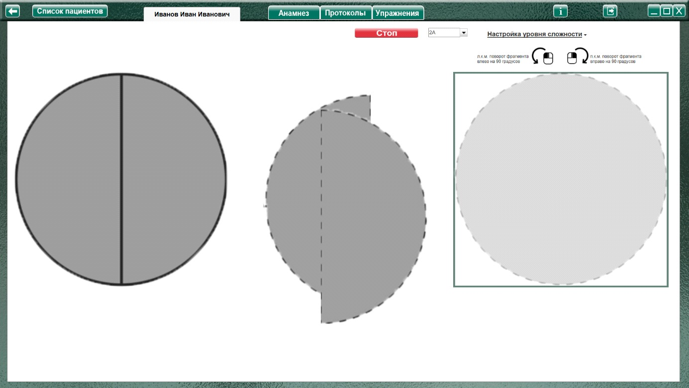
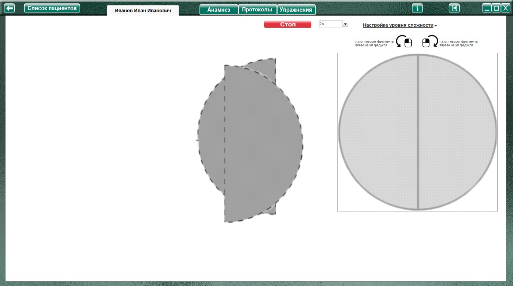
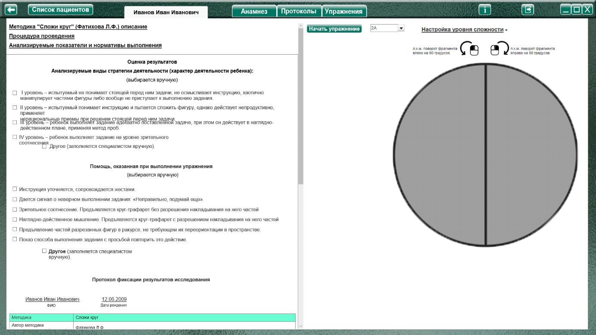
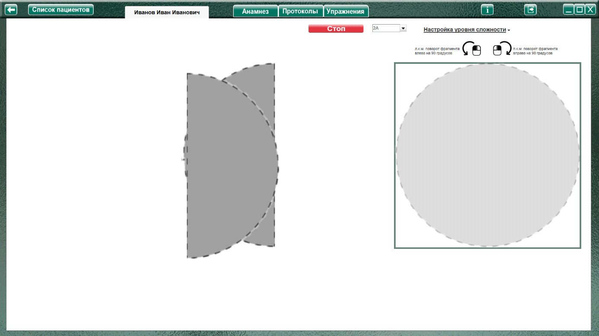

Методика «Сложи круг» (Фатихова Л.Ф.)
Процедура проведения.
Методика предусматривает последовательное усложнение заданий на комбинирование за счет увеличения количества частей в круге (от 2 до 6) и вариативности их пространственного расположения. Таким образом, материал представлен кругами с традиционными разрезами, т.е. разрезанными по диагонали и с нетрадиционными разрезами.
Задание состоит в том, что, глядя на лежащий перед глазами круг, являющийся образцом, испытуемый должен сложить такую же фигуру сначала из двух частей, (2 круга), затем из трех (2 круга), из четырех (2 круга), из пяти (2 круга), из шести (2 круга). Все круги предъявляются последовательно. Круг 2а используется для объяснения задания и при подсчете баллов не учитывается.
Анализируемые показатели и нормативы выполнения
I уровень – испытуемый не понимает стоящей перед ним задачи, не осмысливает инструкцию, хаотично манипулирует частями фигуры либо вообще не приступает к выполнению задания.
II уровень – испытуемый понимает инструкцию и пытается сложить фигуру, однако действует непродуктивно, применяет нерациональные приемы при решении стоящей перед ним задачи.
III уровень – ребенок выполняет задание адекватно поставленной задаче, при этом он действует в наглядно-действенном плане, применяя метод проб.
IV уровень – ребенок выполняет задание на уровне зрительного соотнесения.
Если на каком-то этапе эксперимента задание оказывается для ребенка непосильным, он оказывает I или II уровни выполнения, ему последовательно предлагаются следующие виды помощи:
1. При первом уровне выполнения задания инструкция уточняется, сопровождается жестами.
2. При втором уровне выполнения дается сигнал о неверном выполнении задания: «Неправильно, подумай еще».
3. Ребенку предъявляется круг-трафарет, разделенный линиями на 2, 3, 4, 5, 6 частей таким образом, чтобы изображенные части соответствовали тем деталям, которые предъявляются испытуемому. При этом виде помощи ребенку предлагается сложить круг, ориентируясь на зрительное соотнесение, т.е. не разрешается накладывать части разрезного круга на круг-трафарет.
4. В тех случаях, когда предъявление расчерченного образца не способствует успешному выполнению задания, ребенку предлагают наложить имеющиеся у него части круга на
соответствующие им части круга-трафарета, т.е. выполнить задание, прибегая к наглядно-действенному мышлению. Затем испытуемый должен из тех же частей составить круг вне круга-трафарета.
5. В ситуации неуспеха ребенка при использовании предыдущих видов помощи экспериментатор сам накладывает части на образец, затем побуждает к этому ребенка, после чего ребенок должен сам сложить круг.
Оценка производится исходя из уровня сложности и необычности, разреза для ребенка. Круг 2а не оценивается, так как имеет обучающую цель, способствует пониманию ребенком смысла задания, позволяет ему вработаться в процесс деятельности. Задание 2б оценивается в 1 балл. Круги 3а, 4а, 5а, 6а имеют привычный для ребенка разрез, выполнение этих заданий оценивается в 2 балла.
Круги 3б, 4б, 5б, 6б более сложны для синтезирования, их выполнение оценивается в 3 балла.
Таким образом, максимальное количество баллов составляет 21 балл. Если испытуемый действовал на основе зрительного соотнесения, количество баллов не уменьшается. Использование проб уменьшает результат за каждый синтезированный круг на 0,5 балла. За каждый из видов помощи количество баллов за круг также уменьшается на 0,5 балла. Когда ни один из видов помощи не приводит к положительному результату, работа ребенка оценивается в 0 баллов.
Анализ результатов
Группы детей |
Баллы |
Нормально развивающиеся дошкольники |
14-21 |
Дошкольники с задержкой психического развития |
10,5-18,5 |
Дошкольники с умственной отсталостью |
5,5-13,5 |
Нормально развивающиеся дошкольники выполняют все круги с традиционными разрезами на уровне зрительного соотнесения (IV уровень), при выполнении кругов с нетрадиционными разрезами показывают как III, так и IV уровни, т.е. в зависимости от сложности задания и количества разрезов пользуются при синтезировании кругов то зрительным соотнесением, то методом проб. В деятельности детей четко прослеживается способность к переносу усвоенного способа действия на новый этап задания – следующий разрезной круг.
Дошкольники с ЗПР понимают поставленную задачу и, как правило, легко складывают круги, разрезанные на 2-3 части, показывая IV уровень выполнения. Переход на метод проб начинается
с круга 4б, разрезанного на 4 части. Чем сложнее конфигурация разреза и чем на большее количество частей разрезан круг, тем больше дошкольникам с ЗПР требуется помощь взрослого. Чаще всего дошкольники с ЗПР нуждаются во втором и третьем видах помощи.
Дошкольники с умственной отсталостью зачастую способны самостоятельно сложить круг только из 2 частей, для складывания остальных кругов им нужна помощь, которая, в зависимости от
уровня развития перцептивной деятельности может носить разную степень успешности: одна группа дошкольников складывает круг с многочисленными пробами и с большой дозой помощи со стороны
взрослого, по преимуществу обучающего характера (четвертый и пятый виды помощи), другая группа – показывает нулевой результат даже в условиях обучения. Вторая группа – это дошкольники, которые с самого начала не понимают поставленной задачи, используют в деятельности нецеленаправленные манипуляции.
Оценка результатов
Характер деятельности ребенка
Виды возможной помощи:
Протокол фиксации результатов исследования
_________________________________ _______________
ФИО Дата рождения
Методика |
Сложи круг |
|||
Автор методики (адаптации, модификации) |
Фатихова Л.Ф. |
|||
Цель: |
Выявление уровня и особенностей сформированности наглядно-действенного мышления; выявление способности к переносу действия в новые условия при решении наглядно-действенных задач более сложного уровня. |
|||
Дата / специалист |
||||
Результат: баллы (макс.) / вывод об уровне развития |
||||
Примечание |
||||
Процесс выполнения диагностического задания |
||||
| № | Характер деятельности ребенка |
Виды помощи |
Баллы |
2б |
|||
3а |
|||
3б |
|||
4а |
|||
4б |
|||
5а |
|||
5б |
|||
6а |
|||
6б |
|||
| Итоговая оценка 1 | |||

Логика заполнения протокола
Заполняется автоматически
Имя специалиста – логин при входе в программу.Ячейки «Характер деятельности ребенка», «Виды помощи» заполняются в зависимости от выбора специалиста в поле «Оценка результатов» либо самостоятельно.
Итоговая оценка – сумма баллов за все упражнения. Заполняется после формирования протокола по всем выполненным заданиям по нажатию кнопки «Подвести итог».
Остальные ячейки заполняются специалистом самостоятельно. При внесении не целого количества баллов, для разделения целого и десятичного значения использовать запятую. Например: 2,5
Элементы управления настройкой выполнения упражнения.
Меню настройки уровня сложности

При нажатии открывает окно, для выбора настроек необходимого уровня сложности


При выборе данного пункта, с начала или во время выполнения упражнения, в левой части экрана выводится подсказка «Эталонное изображение».
При выборе данного пункта, в рабочем поле выводится трафарет для сборки картинки.

Cтановится «доступным» часть меню для выбора поворота фрагментов, состоящая из пунктов - выпадающих меню:
Фрагментов, повернутых на 90 о (по умолчанию «1»)
Фрагментов, повернутых на 180 о (по умолчанию «1»)
Фрагменты на 90 градусов поворачиваются влево/вправо через один.
Например:
Если выбрано фрагментов, повернутых на 90 градусов 1, то он будет повернут влево.
Если 2 – то один влево, второй вправо.
Если 3 – то 1й влево, 2й вправо, 3й снова влево.
И т.д.
Подсказки (напоминания) для вращения фрагментов
Напоминают (уведомляют), что клик левой кнопкой мыши (л.к.м.) по фрагменту поворачивает выбранный фрагмент на 90 О влево, а клик правой кнопкой мыши (п.к.м.) поворачивает выбранный фрагмент на 90 О вправо.
Выполнение упражнения.

Выбрать в меню задание, и нажать кнопку «Начать упражнение» (запуская секундомер, и открывая задание на весь экран)

Выполнить задание согласно пункту «Процедура проведения». Собрать фрагменты путем перетаскивания мышкой, с зажатой левой кнопкой. Если фрагмент повернут, то клик левой кнопкой мыши (л.к.м.) по фрагменту поворачивает выбранный фрагмент на 90 О влево, а клик правой кнопкой мыши (п.к.м.) поворачивает выбранный фрагмент на 90 О вправо.
По окончании выполнения нажать кнопку «Стоп», открывая поле оценки результата. При необходимости выбрать характер деятельности, виды помощи, и нажать кнопку «Сформировать протокол». Произвести оценку результата (заполнить оставшиеся ячейки протокола) согласно пункту «Анализируемые показатели и нормативы выполнения».
Только после формирования протокола по выполненному заданию можно приступить к выполнению следующего!
После формирования протокола по всем выполненным заданиям, нажать кнопку «Подвести итог» под протоколом, чтобы заполнить ячейку «Итоговая оценка».